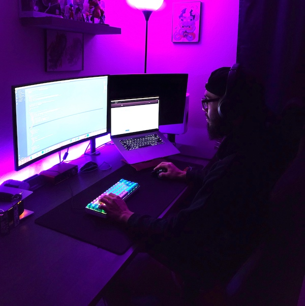

Israel Rodriguez
I am a Front-end developer with a good knowledge of ES6, SASS, CSS, Bootstrap, and React, I have projects to show that. Most recently I have been working with React a lot, though complicated I have been loving it. Getting the chance to branch into building websites using Html, CSS, JavaScript, and React would be really exciting as it is something I am currently using. Ultimately, I am a developer because I love to learn, and I would be really excited to get the opportunity to work in an environment that would further my skills.
Besides being a developer. Another passion I have is powerlifting and playing the guitar.